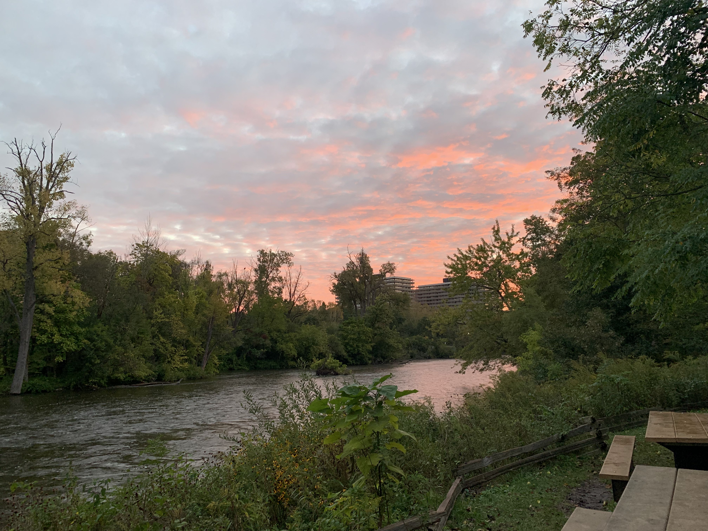

These are some of the scenic view photos I took over the years from various places I travelled.
Ann Arbor Arbetorium

Description
Ann Arbor Arbetorium is a great place for going for hikes and also for photography. One day early morning, my friends dragged me to this place at 5am just so, we could see the sunrise from this place. This picture is of that sunrise. The weather was early fall, late summer, perfect for hiking.
Camera settings
ISO 160, 26mm lens, f1.8, 1/60s
Date
Sept 26, 2021
Early winter late fall at Ann Arbor

Empire State Building at New York City

The Tunnel at New York City

Steam Chimney in Black & White

Taxis at New York City

New York City Skyline